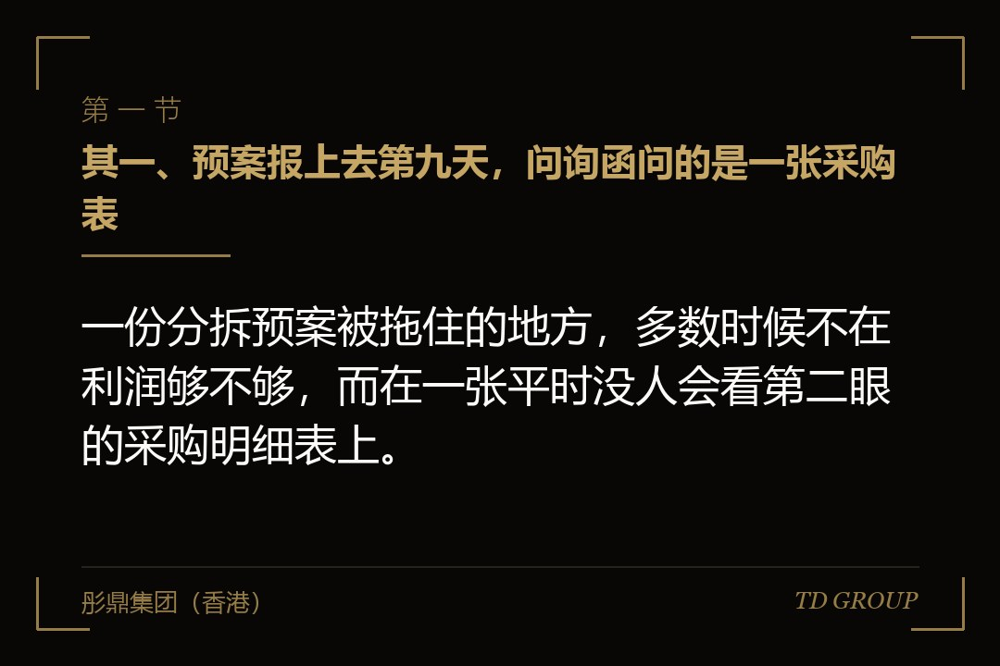
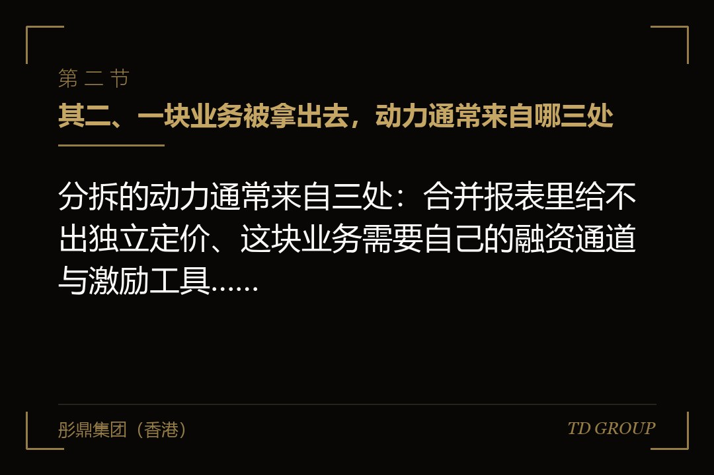
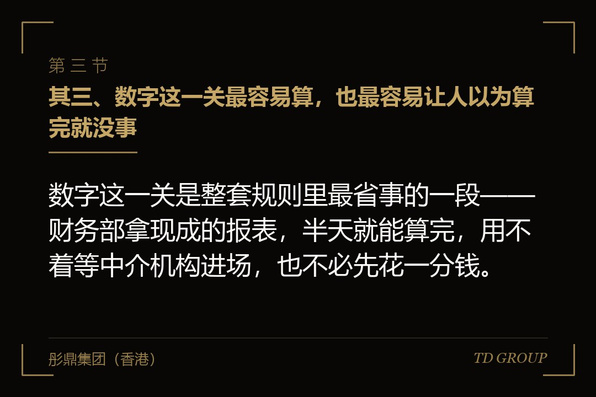

其一、预案报上去第九天，问询函问的是一张采购表

结论先行：一份分拆预案被拖住的地方，多数时候不在利润够不够，而在一张平时没人会看第二眼的采购明细表上。
假设有家在境内上市了七年的装备制造公司，主业是工程机械。它旗下有家做智能装备的子公司，成立六年，去年净利润八千多万，增速比母公司主业快出一截。董事会开会通过了分拆预案，打算让这家子公司单独申请上市。
预案公告出去第九天，交易所的问询函到了。问的不是利润，也不是估值，是一张表：报告期内这家子公司向母公司及其控制的企业采购原材料的金额，占它采购总额的比例是多少；为什么会到八成左右；这个价格是怎么定的；分拆之后如果换供应商，成本会不会变，业务还撑不撑得住。
董秘当时的反应是"这不就是集团内部采购嘛，一直都这么干的"。问题正在于"一直都这么干"。这家子公司从设立那天起就是母公司体内的一个事业部改的，钢材、液压件、铸件全走母公司的集中采购，价格随母公司的年度框架协议走，从来没有单独议过价。
在合并报表里，这些交易全部抵销，外面看不出来。一旦要它作为独立主体去上市，这八成就得重新解释一遍：它到底是一家有独立经营能力的公司，还是母公司的一道工序。
这份预案后来在公司内部放了十四个月才重新报。中间做的事跟利润无关——换了两家外部供应商、把两条产线连同人员一起划进子公司、重新签了带可比价的采购协议。
其二、一块业务被拿出去，动力通常来自哪三处

结论先行：分拆的动力通常来自三处：合并报表里给不出独立定价、这块业务需要自己的融资通道与激励工具、它跟母公司的经营节奏本来就不是一回事。
头一处是定价。一家主业是工程机械的公司，外界会按工程机械那一套去看它的报表；里面那块做软件和智能装备的业务，收入结构、毛利水平、投入节奏全不一样，装在同一张报表里，很难被单独看清楚。
这里要先说明一句：本文不讲分拆之后价格会怎么走，那既不是企业方能决定的事，也不是我们该讲的。分拆能改变的只有一件——这块业务从此有了自己的报表、自己的披露、自己的同行参照，别人看它的时候看的是它自己。
第二处是融资通道和激励工具。装在体内的时候，这块业务要花钱得跟集团要预算，跟主业排队；核心团队想给股权，只能在母公司层面给，而母公司盘子大，给出去的那点比例既没有分量也没有指向性。分出去之后，它能自己发股融资，员工持股也落在它自己的股本上。
第三处是节奏。主业按项目和订单走，重资产投入、按工程节点回款；新业务按研发和迭代走，要连续投好几年才有产出。两套节奏放在同一个董事会里排优先级，长期是互相拖。
但这三条动力都不构成"应该分拆"。真正决定能不能分的是后面几关。不少公司是先有了分拆的念头，才回头发现自己连报告期都还没跑够。
其三、数字这一关最容易算，也最容易让人以为算完就没事

结论先行：数字这一关是整套规则里最省事的一段——财务部拿现成的报表，半天就能算完，用不着等中介机构进场，也不必先花一分钱。
境内现行规则里可以直接对表的有这么几项：母公司股票境内上市满三年；最近三个会计年度连续盈利；在扣除按权益享有的拟分拆子公司的净利润之后，归属于母公司股东的净利润三年累计不低于人民币六亿元，净利润按扣除非经常性损益前后孰低值计算。
还有一组是比例：最近一个会计年度合并报表里，按权益享有的该子公司净利润，不得超过归属于母公司股东净利润的百分之五十；同一口径下该子公司的净资产，不得超过归属于母公司股东净资产的百分之三十。
这组比例的意思很直白——分出去的那块不能是母公司的主体。真过了这条线，那就不叫分拆，那叫把上市公司腾空。所以它同时也是在保护母公司剩下那部分股东的利益。
回到前面那家装备公司：上市满七年，三年连续盈利，扣掉子公司之后三年累计归母净利润七亿二；子公司净利润占归母净利润三成八，净资产占两成六。数字这一关它全部够到，卡住它的东西一项都不在这里。
需要提醒的是，这套数字是境内规则的口径。同一件事拿到香港或者美国去做，前置门槛不一样，有的地方没有这类盈利线，但另有给母公司现有股东留出获配安排、或者对分拆作税务认定的一整套条件。别把境内这组数字直接套过去，各条路径以当地交易所与主管机关的正式文本为准。
其四、更容易堵死的，是"这块业务是从哪来的"
结论先行：拟分拆的这块业务如果来路不对，前面那组数字算得再漂亮也没有用，因为下面这几条是直接把路堵死的。
来源上被堵死的主要有三种。一种是它属于母公司当初首次公开发行股票并上市时的主要业务或者资产——上市时拿这块业务讲过的故事，不能过几年再单独拆出来讲一遍。
第二种是它的主要业务或资产，来自母公司最近三个会计年度里发行股份拿到的钱所投的项目。这里留了一个很窄的口子：子公司这三年用掉的那部分资金合计不超过它自身净资产一成的，可以不算在内。
第三种是它属于母公司最近三个会计年度内通过重大资产重组买进来的业务和资产。买进来放不满三年就分出去，中间这一进一出很难解释得通。
除了来源，还有几条是看主体状态的：子公司主要从事金融业务的不得分拆；母公司最近一年及一期的财务报告被出具非标准意见的不行；母公司及其控股股东、实际控制人在最近三十六个月内受过证监会行政处罚，或者最近十二个月内被证券交易所公开谴责过的，也不行。
再有一条常被漏掉的是持股：母公司的董事、高级管理人员及其关联方，合计持有拟分拆子公司的股份不得超过它分拆上市前总股本的百分之十；子公司自己的董事、高管及其关联方那一层，合计不得超过百分之三十。通过母公司间接持有的部分不计入。
再假设一家公司，它子公司的研发中心和中试线是两年前一次发行股份拿到的钱盖起来的，这部分资产占子公司净资产接近三成，远远超过那一成的例外口径。这家公司的预案在正式申报之前就撤了回来——不是被否掉的，是自己算明白了不必往下走。
这一条的实操意义在于：它本该在董事会开会之前就查完。查它只需要三样东西——上市时的招股文件、这三年的发行股份用途报告、这三年的重组公告。三份材料都在公司自己手上，不用等任何人。
其五、独立性要拆成五件事，每一件都要有能查的证据
结论先行：独立性不是一句表态，它要拆成业务、资产、财务、机构、人员五件事，每一件都得拿得出能被外人查验的证据。
业务独立，看的是这家子公司离开母公司还做不做得成生意：有没有自己的客户、自己的供应商、自己的定价权；跟母公司之间还剩多少交易，那些交易是不是必需的，价格有没有第三方可比参照。前面那八成采购卡的就是这一条。
资产独立，看的是生产经营需要的东西是不是都在它名下：厂房是租母公司的还是自己的、设备权属在谁那儿、商标专利谁登记的、核心系统的著作权归谁。租母公司的场地不是不行，但要有正式合同、有市场化的租金、有可比参照。
财务独立，看的是有没有独立的财务部门和核算体系、有没有独立的银行账户、有没有跟母公司共用账户或者资金池、有没有相互担保和资金占用。资金占用这一条是硬的——母公司存在被控股股东占用资金情形的，本来就不得分拆。
机构独立，看的是它有没有自己的董事会、经营层和职能部门，办公场所分不分得开。人员独立，看的是高管和财务人员有没有在母公司交叉任职，核心技术人员的劳动关系和社保挂在哪一边。
这五件事里，业务独立通常最难，因为它不是补几份文件能解决的。把关联采购占比从八成降到一个说得过去的水平，要真的换供应商、真的把工序连人带产能划过去，还要跑满至少一个完整的报告期，让数据自己显出来。
顺带说一句，这类"占比要跨报告期才降得下来"的判断不是我们自己拍脑袋得出的——我们跟华尔街俱乐部有合作，跨市场的分拆案子见得多一些，最后卡在这一条上的比例高得出奇。
其六、程序上有两道三分之二，中小股东那一道最容易被忽略
结论先行：分拆要过的表决门槛有两道，一道是出席股东所持表决权的三分之二，另一道是中小股东单独的三分之二。
流程的顺序是固定的：董事会先就分拆是否符合规则、是否有利于维护股东和债权人的合法权益、分拆之后母公司还能不能保持独立性与持续经营能力、新公司具不具备规范运作能力，逐项作出决议，并按规定披露预案。
然后提交股东大会。股东大会不是对一个"同不同意分拆"的总议案投一次票，而是要就董事会提案里的各项内容逐项审议、逐项表决。
真正的门槛在这里：决议必须经出席会议的股东所持表决权的三分之二以上通过，并且还必须经出席会议的中小股东所持表决权的三分之二以上通过。这是两道相互独立的线，第二道跟控股股东手上有多少票没有关系。
很多公司是走到这一步才意识到，自己跟中小股东之间平时根本没有沟通渠道。票不会自己投过来，这件事要在开会之前很久就开始做。
再假设一家公司真走到了股东大会：全体出席股东那一档赞成过了八成，看着很稳，中小股东那一档却只有六成出头。议案照样没通过。它不是败在有人反对分拆本身，是相当一部分中小股东的票压根没投出来——通知发了，网络投票通道也开了，就是没有人去把那些票请回来。
议案往下走，还有独立董事与审计委员会那一层的意见，以及会计师和财务顾问的核查意见。信息披露上，董事会决议之后要及时公告预案，之后每一个关键节点——申报受理、问询回复、审核进展——都要跟着披露。
问询是常态不是异常。前面那家装备公司收到问询函这件事本身不说明预案有问题，说明的是它披露的东西还不足以让人判断独立性成不成立。真正的风险在回复：口径跟历史公告对不上，或者为了把占比说小去调统计口径，那才是麻烦。
其七、分拆之后，母公司这一侧的账要重新排
结论先行：分拆不是把一块业务送出去就完了，母公司这一侧有三件事要一起动：持股比例、并不并表、以及少数股东权益那一栏。
子公司要单独上市，就要向外发新股。发完之后母公司的持股比例被摊薄——原来全资或者接近全资，可能变成六成上下，具体看发行规模。
如果分拆之后母公司仍然控制这家子公司，合并报表照旧把它并进来，变的是结构：子公司同样一笔利润，归属于母公司股东的那部分变少了，剩下的进入少数股东损益；资产负债表上少数股东权益那一栏跟着变大。
如果分拆之后母公司不再控制它，那就不再并表，改按权益法或者按金融资产核算，并且要按会计准则对原来持有的股权作相应处理，报表上通常会出现一次性的会计影响。这个影响是正是负、有多大，要按具体交易和账面数去算，本文不作任何方向性判断。
还有一件事容易被忽略：规则要求分拆之后母公司自己要保持独立上市地位和持续经营能力。也就是说不能分完剩一个控股平台。董事会那份决议里要回答的正是这一条，而回答它靠的不是表态，是母公司剩下那块业务自己的收入、利润和在手订单。
其八、预案被撤回，通常卡在这四个地方
结论先行：分拆走不下去，绝大多数落在四种情形里，其中三种可以在董事会开会之前就自己查出来，不用等着被人问。
类型一是独立性说不圆。关联采购或者关联销售占比降不下来、场地和系统还跟母公司混在一起、高管交叉任职没解开。这一类最常见，也最费时间，因为它要跨报告期。
类型二是来路不对。拟分拆的资产属于上市时的主业、属于三年内发行股份拿的钱投出来的、或者属于三年内重组买进来的。这一类查起来最快，三份公司自己手上的文件就能定。
类型三是时点撞上了母公司自身的问题。母公司或者控股股东、实际控制人在三十六个月内被行政处罚过，或者十二个月内被交易所公开谴责过，又或者最近一期财报拿了非标准意见——这时候不管子公司多干净，都得等。
类型四是历史沿革有瑕疵。子公司早年的出资有没有实缴到位、有没有代持没还原、股权变动的价格和税有没有处理干净、早期的知识产权是不是职务成果、权属登记在谁名下。这一类不影响"能不能报"，影响的是"报上去以后要解释多久"。
收口给一份能在董事会开会之前跑完的自查清单，前三件是算数字：母公司上市满没满三年、最近三年是不是连续盈利；扣掉子公司之后三年累计归母净利润够不够那条线；子公司的净利润与净资产在母公司那两个比例里各占多少。
后四件是查底子：翻招股文件、这三年的发行股份用途报告、这三年的重组公告，确认这块业务不属于被堵死的三种来源；拉子公司最近三个报告期的关联采购与关联销售占比，画成一条趋势线；数一遍高管与财务人员的交叉任职，以及厂房、设备、商标、系统的权属登记在谁名下；查母公司与控股股东近三年的处罚与谴责记录，以及最近一期的审计意见类型。
这七件事的共同点是：全部只用公司自己手上的材料就能查完，不需要先请中介，也不需要先花钱。真正要花时间的从来不是这一步，而是查完之后发现独立性不够，回去补的那一到两个报告期。